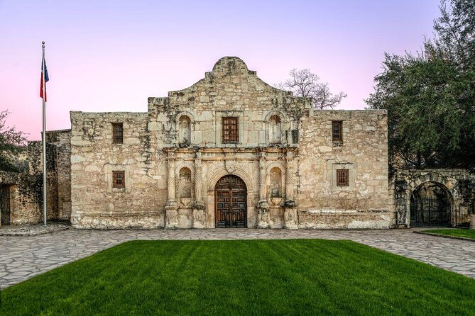
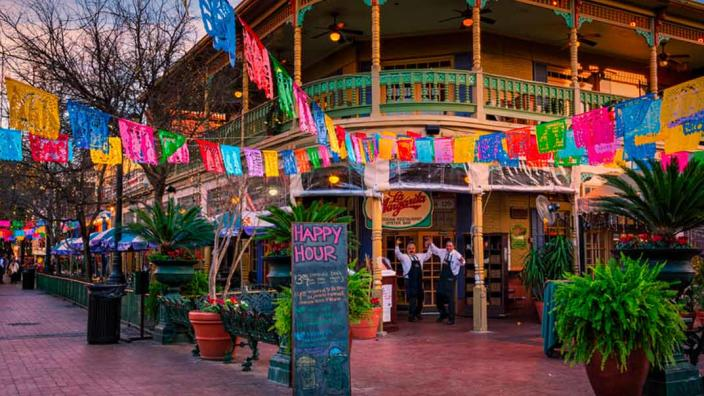

About the City!
San Antonio, Texas, offers a unique blend of rich history, vibrant culture, and warm hospitality, making it an ideal destination for travelers. From the iconic Alamo and the picturesque River Walk to the lively festivals and delicious Tex-Mex cuisine, there's something for everyone. Whether you're a history buff, a foodie, or an outdoor enthusiast, San Antonio delivers unforgettable experiences that showcase the heart of Texas.
Fun Travel Facts!
- THE ALAMO:
- is San Antonio’s most iconic landmark, famous for its role in the Texas Revolution. In 1836, a small group of Texan defenders made a heroic stand against the Mexican Army, and while they ultimately fell, their bravery became a symbol of Texas' fight for independence. Today, the Alamo is a museum and historical site where visitors can learn about this pivotal moment in American history and explore its preserved grounds and exhibits.
 - THE RIVER WALK:
- The San Antonio River Walk is a 15-mile network of walkways along the San Antonio River, lined with shops, restaurants, and vibrant gardens. It’s also one of the city's most visited attractions, drawing over 12 million visitors annually!

- MERCADO STREET MARKET
- Visitors can explore colorful stalls selling handmade goods, traditional jewelry, and authentic Tex-Mex cuisine, all while enjoying live music and folkloric dance performances. It’s a perfect spot to experience the city’s rich Mexican heritage and pick up unique souvenirs.

Enjoy an interactive tour of downtown San Antonio!
Enjoy an interactive live tableau!

Back to Top!